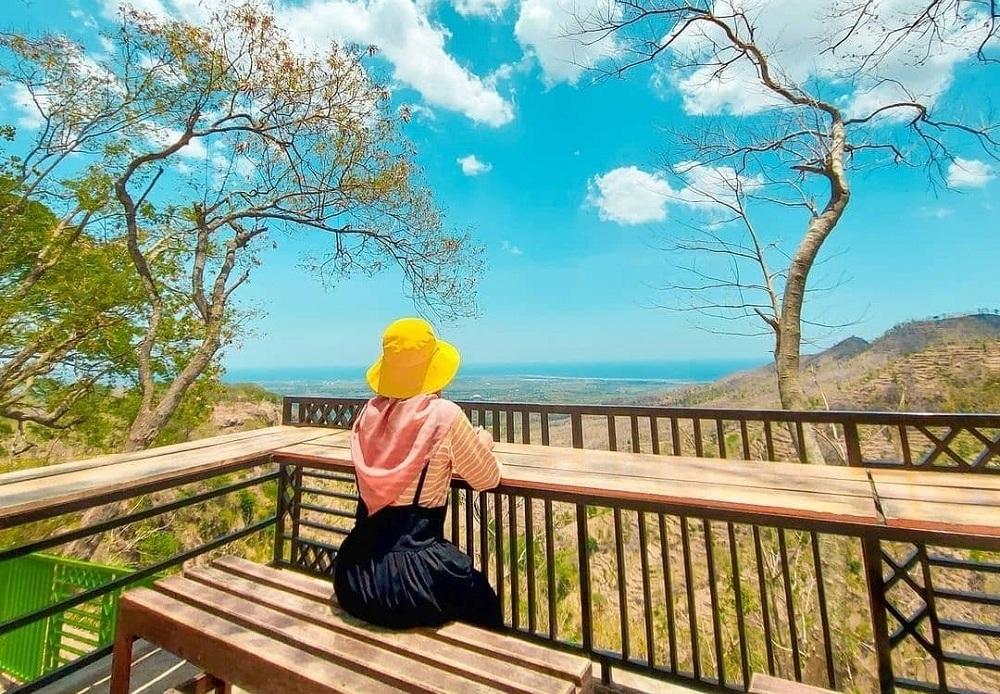

Keindahan Wisata Arak-arak Bondowoso
Pariwisata Arak-arak Bondowoso menjadi salah satu destinasi wisata yang wajib dikunjungi para wisatawan yang datang ke bondowoso. menawarkan keindahan alam yag nyaman dan asri.
Read morePariwisata Arak-arak Bondowoso menjadi salah satu destinasi wisata yang wajib dikunjungi para wisatawan yang datang ke bondowoso. menawarkan keindahan alam yag nyaman dan asri.
Read moreTak kala dengan wisata lain yang ada di Bondowoso, Wisata P28 juga menjadi salah satu destinasi favorit pilihan masyarakat. Tertarik?
Read more